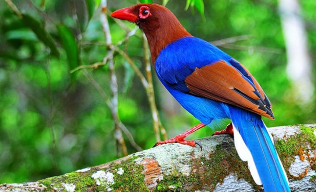
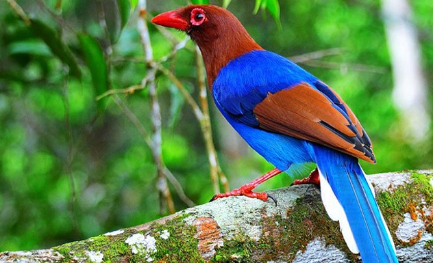
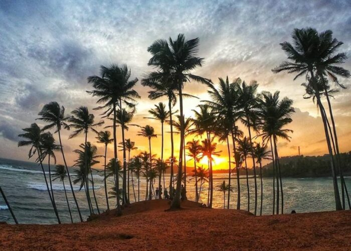
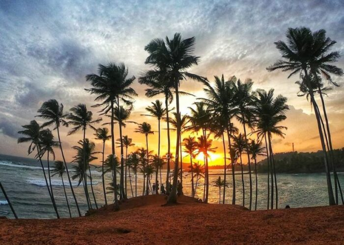
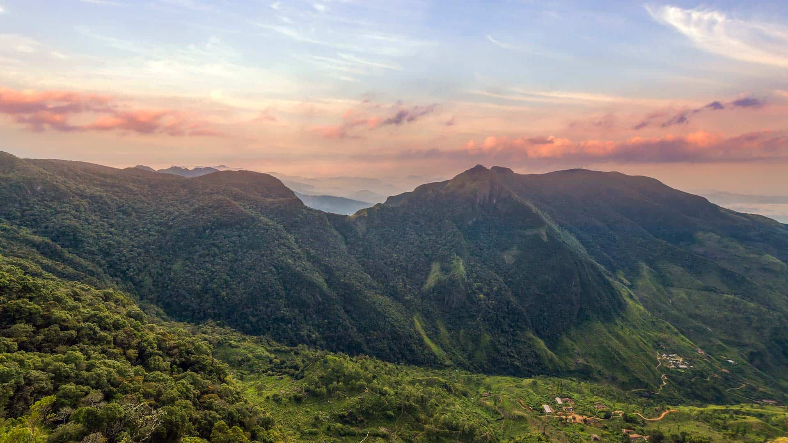
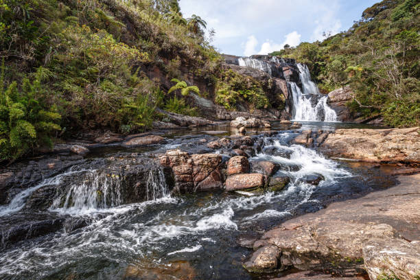
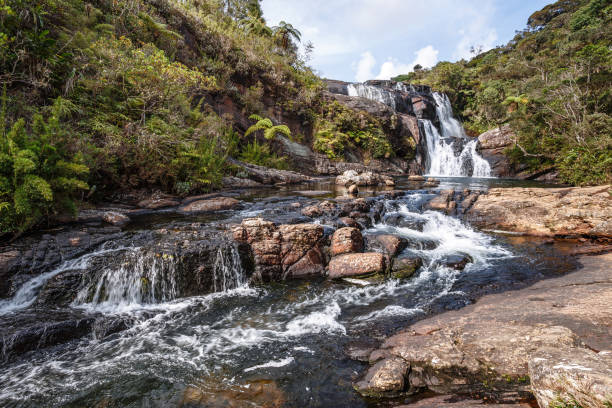
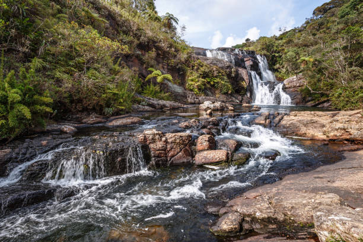
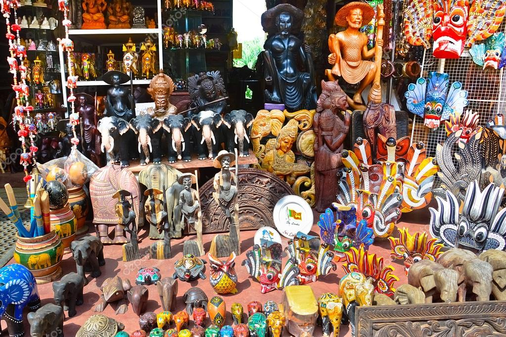
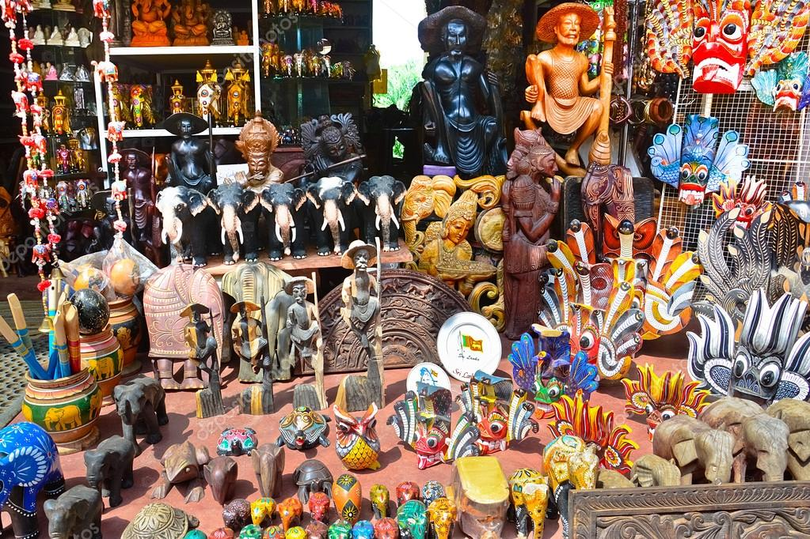

×


 



 






 






 


| Location | Reknowned Animal Sightings | Did you know? |
|---|---|---|
| Sinharaja Forest Reserve |
|
Sinharaja world heritage site is rich in bird life with an impressive 147 species recorded to date. It is also the only location where 21 out of 26 bird species endemic to Sri Lanka may be viewed. |
| Mirissa Coastline |
|
Mirissa attracts tourists not only for its coastal wildlife but for other fun activities including surfing, snorkeling and its vibrant nightlife. |
| Wasgamuwa National Park |
|
Sloth bears are not commonly spotted in many wildlife regions in Sri Lanka. Wasgamuwa is one of the very few places where you are likely to spot this fascinating creature. |
| Horton Plains National Park |
|
Horton Plains is reknowned for its breathtaking scenery, amazing waterfalls, the World’s End reservoir view and its three-hour long hiking trail. |
| Sea Turtle Hatchery Centre |
|
Turtle nesting season in Sri Lanka takes place between November and May, while hatching season falls between January and June (peak February - April). You may like to bear this in mind when selecting your visit dates. |
| Pinnawala Elephant Orphanage |
|
As of 2023,Pinnawala has the largest herd of captive elephants in the world. |
| All information contained here is true as of January 2024. | ||